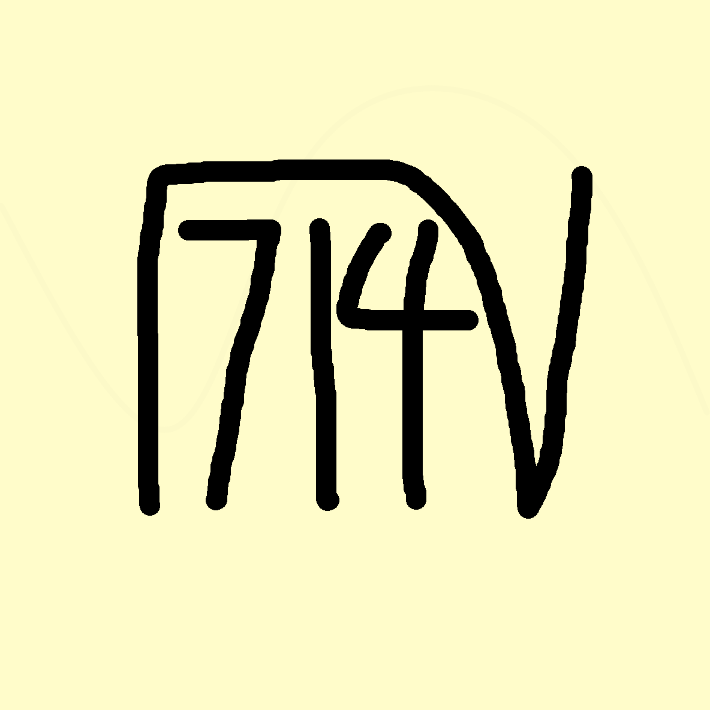
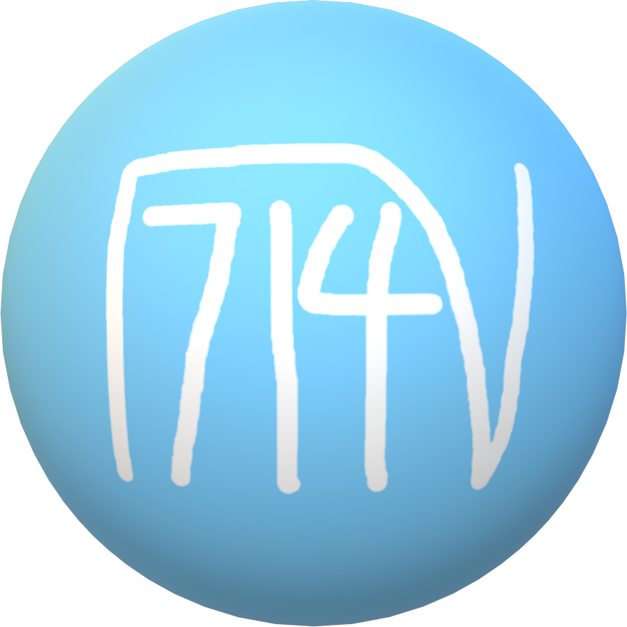
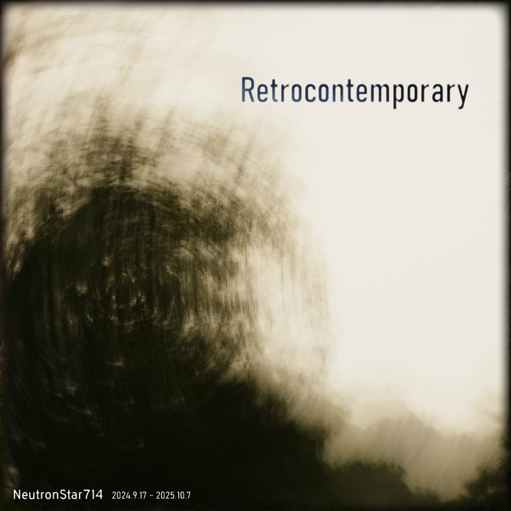
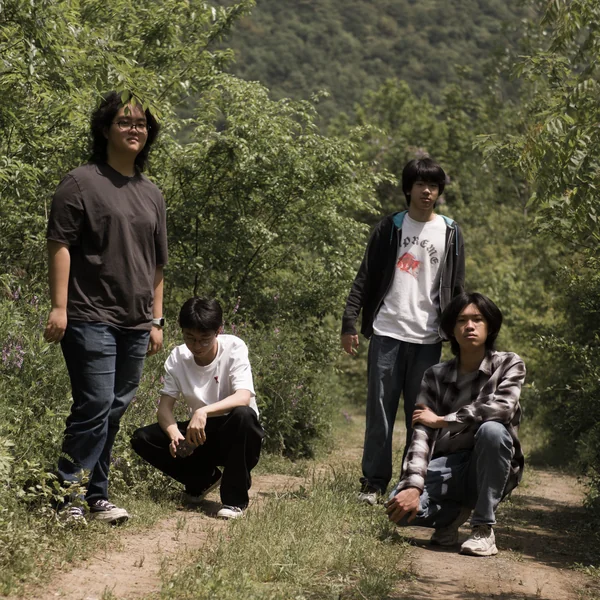
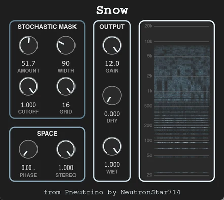
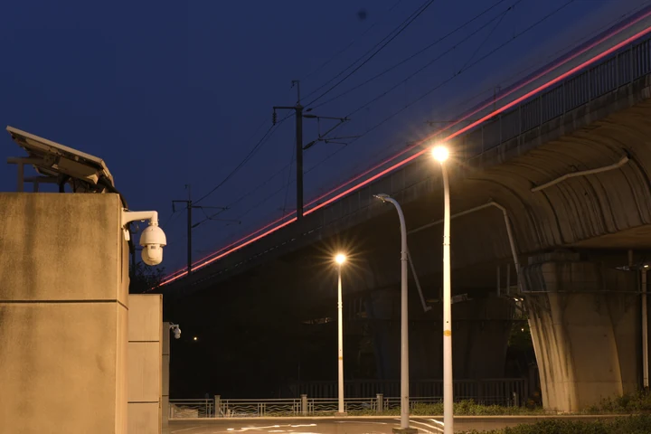

My name is Andy Feng, or NeutronStar714. I'm interested in chemistry and music. I create by making electronic music, playing with my school-based rock band G10, developing audio effect plugins, and taking photographs.